Providence Promise
One place for families to track what they’ve earned toward their child’s college savings, instead of five.

- Role
- UX Designer: partner research and the Incentives flow
- Duration
- 2 semesters (Oct 2025 – Apr 2026)
- Team
- 6 designers, Design for America (Brown/RISD)
- Tools
- Figma, FigJam, Figma Make
01 The problem
The program worked. Everything around it didn’t.
Providence Promise opens a 529 college-savings account for every child in Providence’s public and charter schools, then adds money when families show up: good attendance, workshops, parent-teacher meetings. A family can earn up to about $250 a month.
The money was real; the path to it was scattered. Updates arrived through WhatsApp, email, texts, phone calls, and paper mail, and every activity had to be photographed and sent in by hand. The partner put it plainly: too many apps are being used.
I researched Providence Promise as one of three candidate partners, and the team chose it because the need was concrete and the people were reachable.
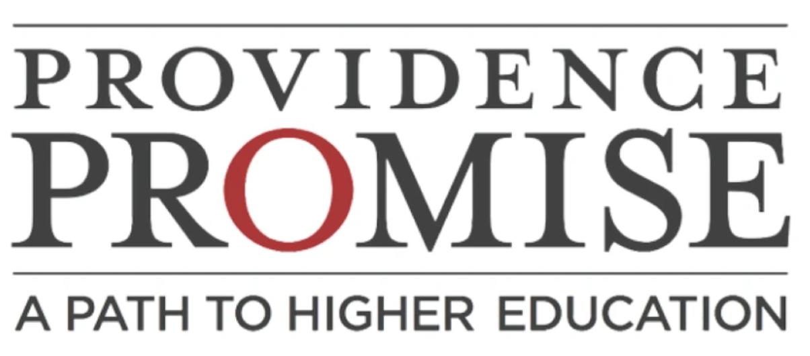
02 Research
We listened before we sketched.
Weekly meetings with the program’s administrators set our constraints; interviews with parents set our priorities. We wrote every parent comment onto a sticky note, 36 in all, then grouped and ranked them until three themes held: communication is scattered, the app has to be simple for everyone, and logging and reminders keep failing.
We also studied how Eventbrite, POINT, The Knot, Chase, and Delta handle events, sign-in, and progress, so that the patterns parents would meet in our app were ones they already trusted.
“We need one central place for PVD Promise information.”Parent interview
“It’s difficult—I always forget to submit incentives.”Parent interview
“Only about 40 parents are active in the WhatsApp group.”Parent interview
“We’ve been wanting an app—it was just too expensive before.”Parent interview
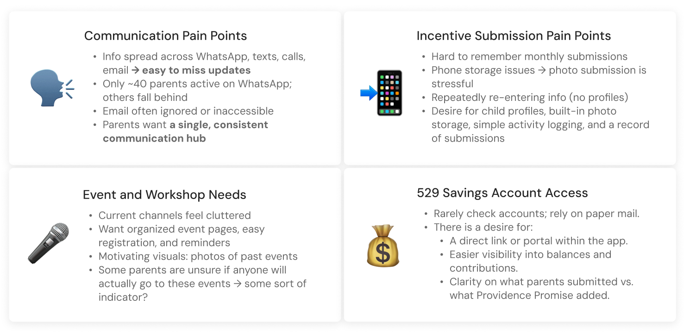
03 User pain points
The hardest part wasn’t earning. It was remembering.
Forgetting was not a character flaw; it was what happens when a system asks busy parents to hold everything in their heads. Photos filled up phone storage, forms asked for the same details every month, and nobody could see a record of what they had already sent.
Two personas kept us honest. Aleisa, a working mother of two who prefers Spanish, needed reminders and a history she could trust. Rachel, a program coordinator, needed fewer repeated questions and submissions she could actually process.
- Information spread across WhatsApp, texts, calls, and email; updates get missed.
- Monthly incentive submissions are easy to forget.
- Photo proof fills phone storage and has to be re-sent.
- No child profiles, so families re-enter the same information.
- No record of what was submitted versus what the program added.
- Parents can’t tell whether anyone else is going to an event.
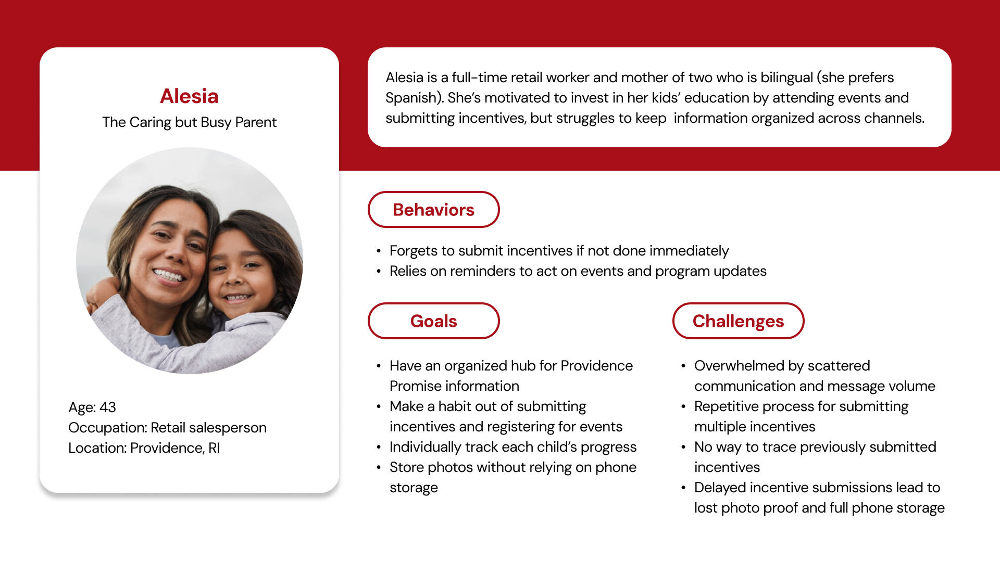
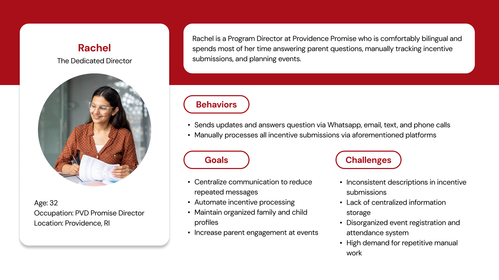
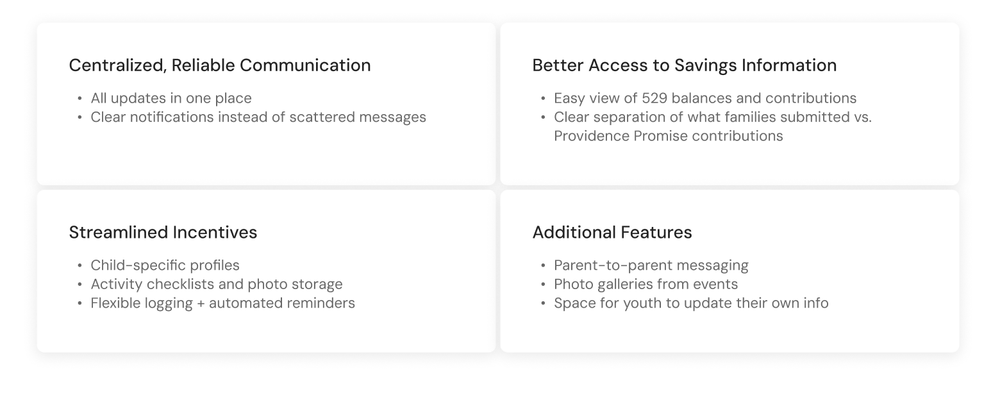
04 Design response
Four tabs, each answering one question.
We built the app around what a parent comes to do: Home (what’s next?), Incentive (what did I earn?), Events (where should we be?), and Profile (who’s in my family?). Each of us took one branch of the sitemap from sketch to high fidelity; mine was the Incentives Tracker, where the app’s central promise lives.
Every major feature traces back to something a parent or coordinator told us.
- “We need one central place”Home dashboard with resources and newsletter
- “I want to log things immediately”Add Incentives on Home, drafts, Submit All
- “Submit incentives for each child separately”Student switching and per-child tagging
- “A record of what I submitted”Approved, Pending, Rejected, and Total Earned
- Inconsistent submissions (staff)Photo guidance and Administrator Notes
- “Seeing how many signed up motivates me”“85 registered” on every event card
- “Fewer steps for logging in” (staff)Access-code sign-up and English/Español toggle
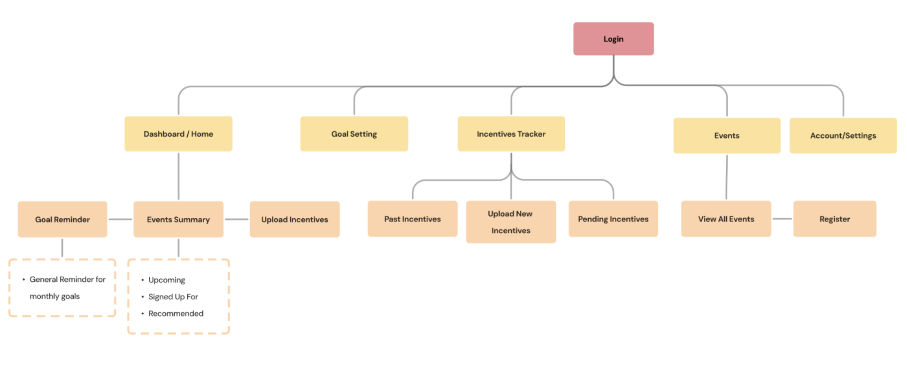
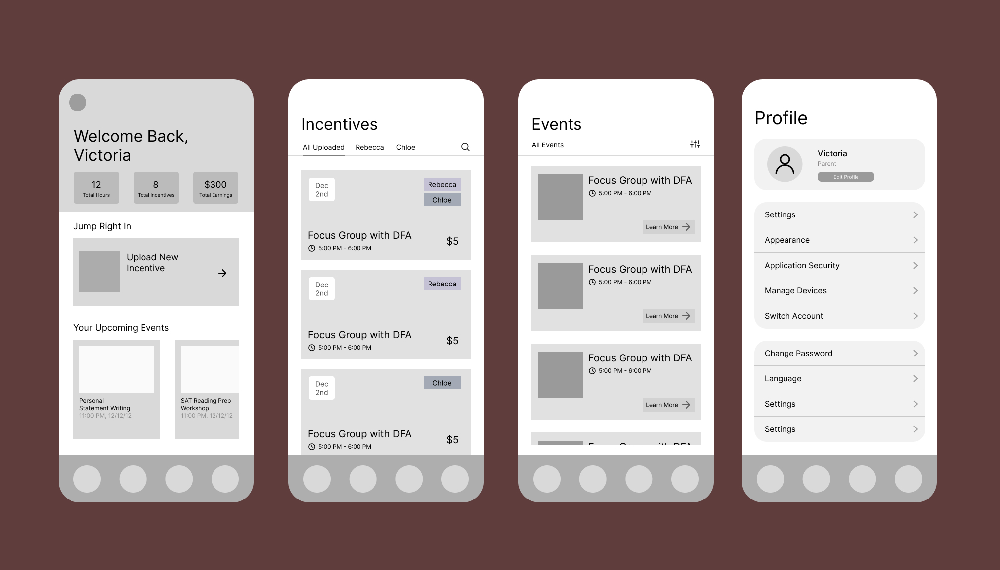
05 Usability testing
Parents finished the tasks, but they hesitated in the same places.
We ran task-based sessions across Home, Events, Incentives, and sign-up: register a child for an event, submit an incentive for one of two children, find how much the family has earned so far. Nobody got lost; the pauses told us more than the completions did.
One pause mattered most. Two “All” buttons on the Incentives screen, one for students and one for status, left parents unsure which filter they were touching.
- Unclear limits and progress. Added incentive progress and caps to the summary.
- High-friction submission. Multi-incentive form with Save Draft and Submit All.
- Events lacked context. Summary cards with reward, time, place, audience, and headcount.
- Who is attending? Registration now asks which student, how many children, and whether a guardian is coming.
- Weak status feedback. Rejected items show the reason right in the list.
- Multi-child households. Student switching on Home, Incentives, and Profile.
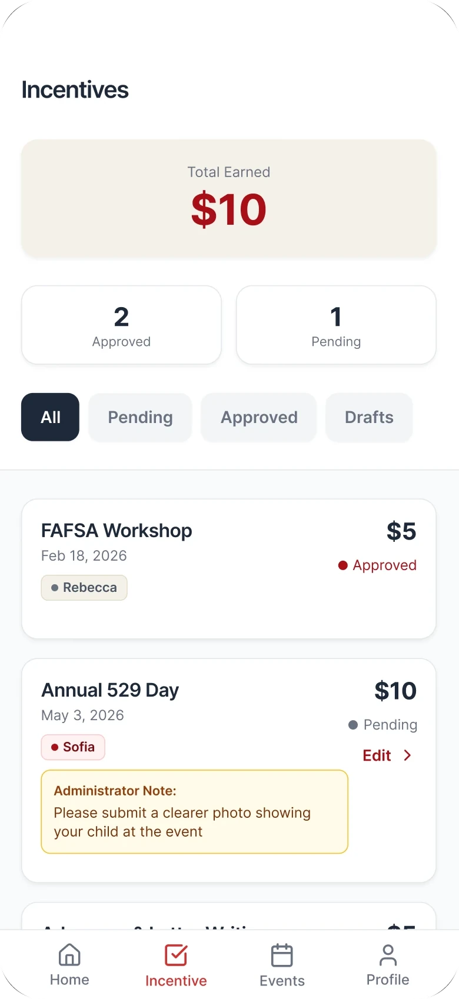
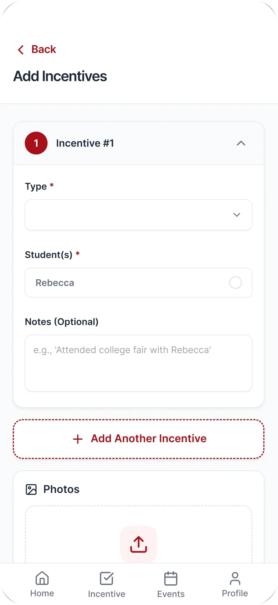
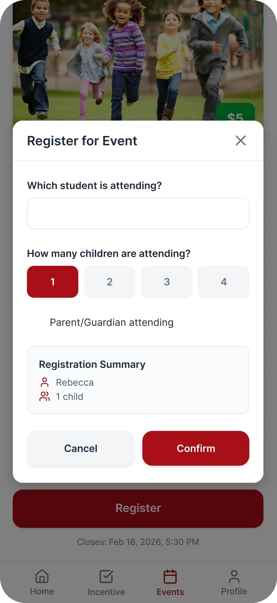
06 Final design
An app that remembers, so parents don’t have to.
A parent opens the app, sees what’s coming, and logs an activity in the moment it happens, tagged to the right child. Declined submissions explain themselves. Events show who else is going. Sign-up starts with a language choice, English or Español, and an access code from the program.
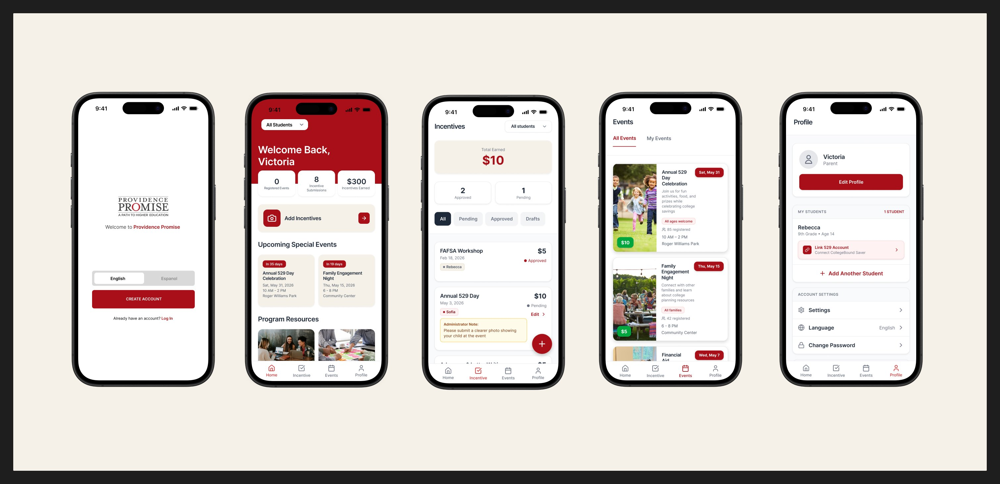
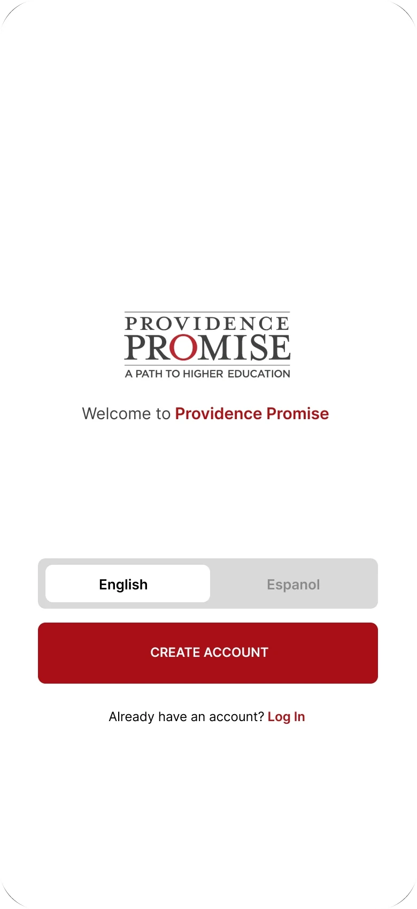
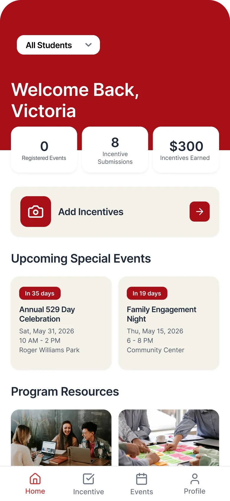
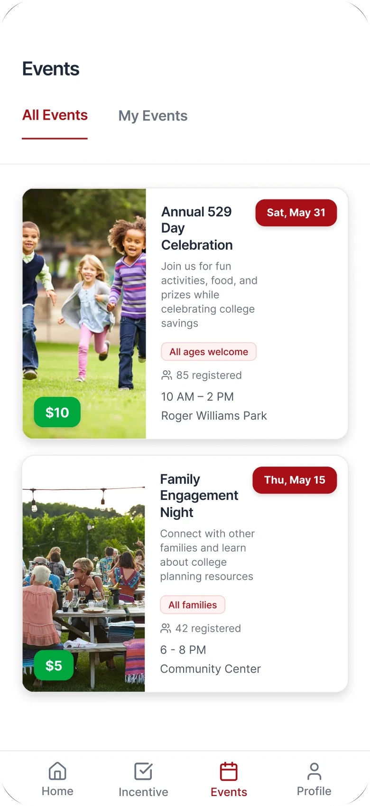
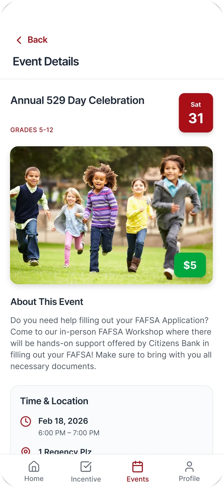
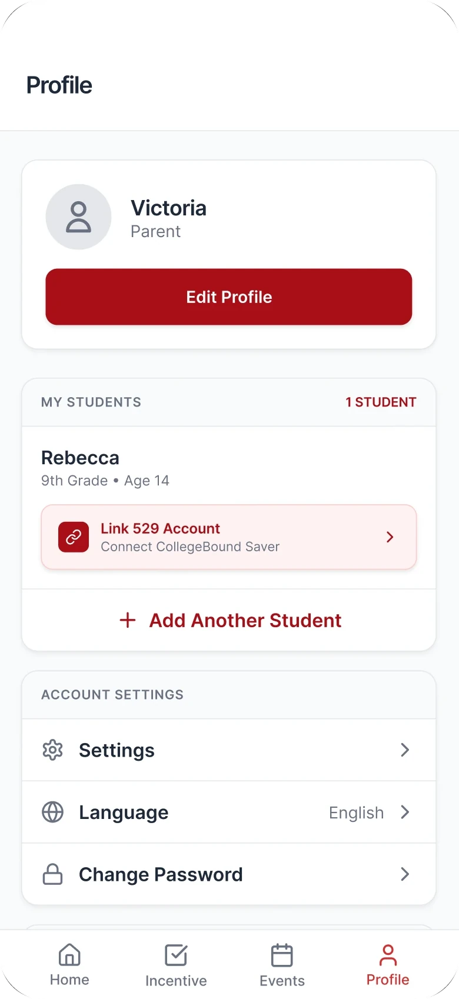
Prototype walkthrough
Recorded from the interactive Figma Make build we used for usability testing: Home to Incentives, two incentives submitted at once, then Events and Profile.
07 Design system
One shared language for six designers.
Each of us designed a different tab, often asynchronously, so a small design system did the coordinating: one red, a warm cream, a neutral grayscale, and SF Pro Rounded from 28pt headings down to 12pt body. It kept the four tabs feeling like one app, and it made Figma approachable for teammates with less design experience.
We presented the prototype to Providence Promise at our spring final critique, with feature priorities and documentation prepared for developer handoff as the next step.
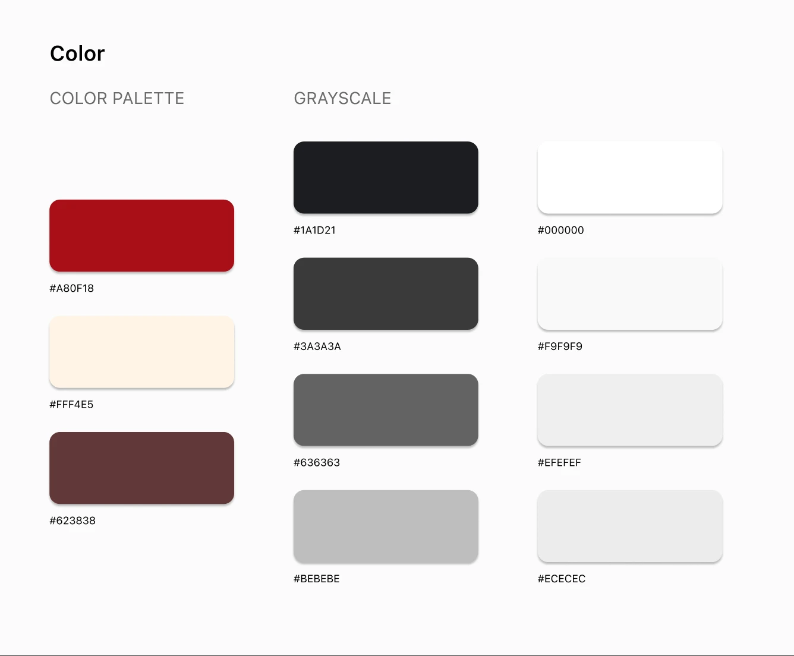
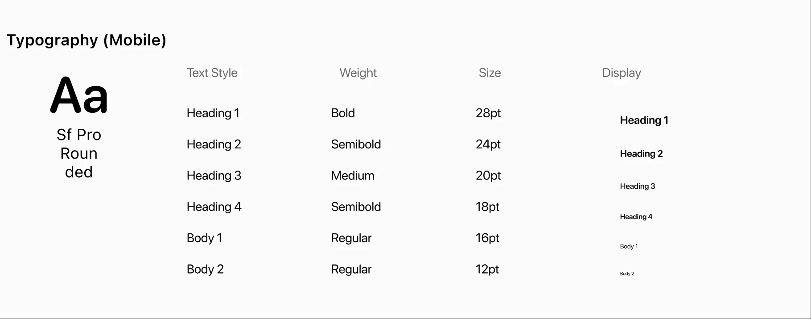
08 Takeaway
Where it succeeds: the parents who were falling behind.
The WhatsApp group reached about 40 parents; the program serves 700 families. The distance between those two numbers is where this app does its real work. A parent who logs an activity the moment it happens is a parent who gets credited for it, and every dollar that arrives on time keeps growing in a child’s college fund. Is an app the whole answer to college access? No; but a single record a family can trust is what has to exist before they can believe the program is working for them.
For families
Fewer missed incentives, one record per child, and events they can see other parents attending.
For the six-person staff
Standard submissions, rejection notes that explain themselves, and fewer repeated questions answered by hand.
What I learned
Designing for a wide range of users means removing, not adding. Whenever a stakeholder constraint and a parent’s need pulled apart, the parent’s need decided the flow.